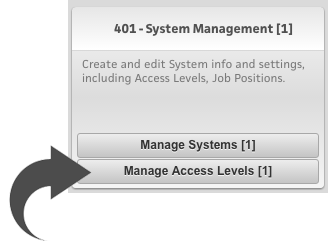
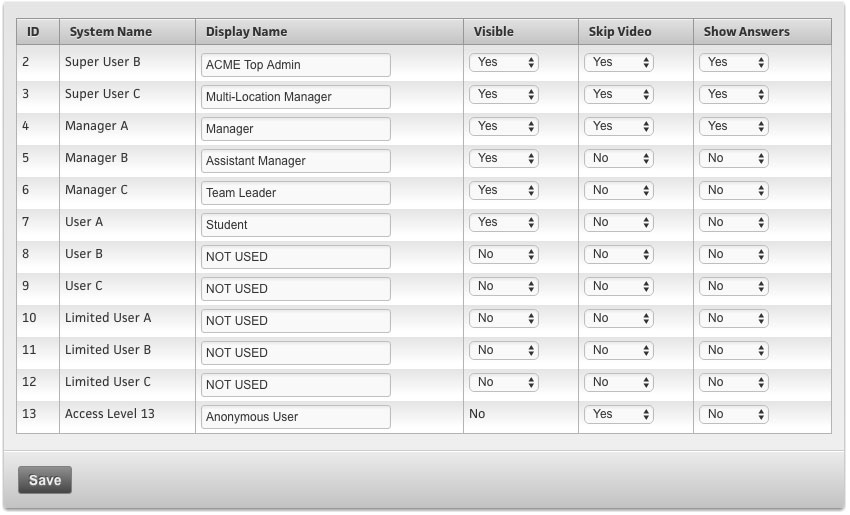
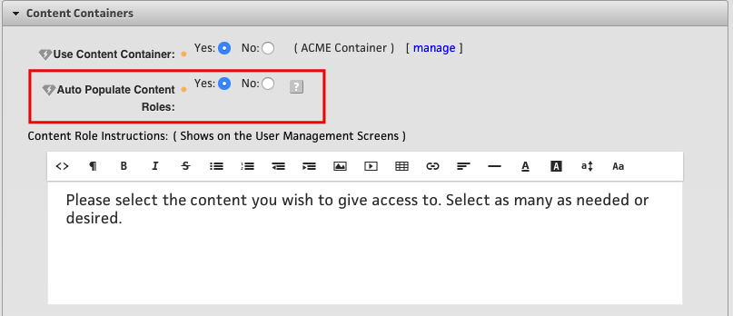
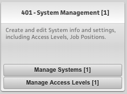
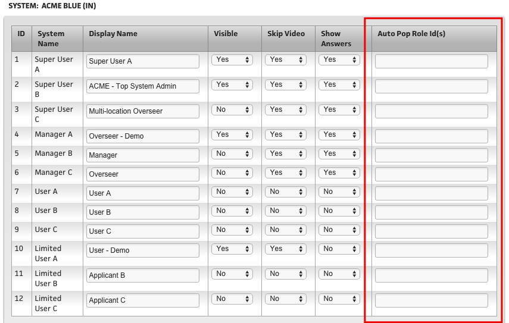
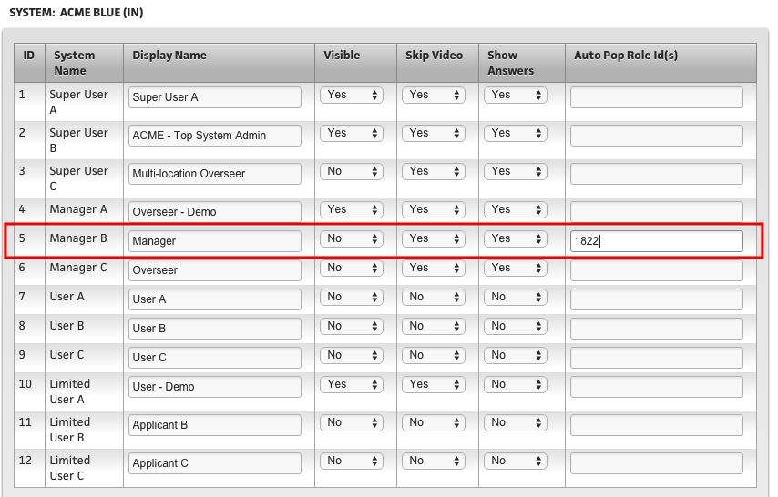

Overview
Each user is assigned to one (and only one) Access Level, and this determines what basic “Overseer” privileges they have, or do not have.
Each “System” currently has up to 11 access levels. Within the System, these Access Levels can be renamed, turned on/off, and select privileges toggled on/off to best suit your needs.
The Access Levels have ID#’s 2 through 12 so that when you rename them, you can still see the ID# in some areas so you know which is which (Access Level #1 is reserved for internal LSVT use).
The Access Levels are split into four sets:
Super Users: ID# 2 and 3
The Super User has access to the Super User Dashboard, and in short, that means they can have access to more than one Location. Your internal team of “Top Admins” will always be the highest level, which is ID# 2.
You will often rename Access Level #3 to a “Multi Location Manager” - so that these users can oversee and run reports on multiple Locations.
Managers: ID# 4, 5 and 6
The “Manager” has access to oversee Users that are at their Access Level and below. They can create users (if toggled the ability to do so) and they can run reports. The users they can create and reports that they can run are limited to their own Location.
Users: ID# 7, 8 and 9
This Access Level is for standard users. There is often only the need to use one of these “User” Access Levels and turn the others off. They all have the same exact privileges (or lack thereof) in that they can only see their own reports, and not other users. This level does have access to the LightPad Message Center and can send messages to other users at their Location.
However one reason why you may want to use all three of these Access Levels is if you have the need to “Auto-Populate” content to a user, based on their Access Level. In this case, you may need more than one “User” Access Level to designate what you need.
To learn more about how to use the “Auto Populate” Content Feature, see below.
Limited Users: ID# 10, 11 and 12
This Access Level is almost exactly the same as the “User” set, with the exception that in the LightPad Message Center, this Access Level can only send a message to “Support” and not to other users at their Location.
How to Configure Access Levels
In the Super User Dashboard, go to the “400 - Application Administration” area, and look in the “401 - System Management” section for the button called “Manage Access Levels.”

If you have access to more than one System, you will first select the System you want to administrate the Access Levels for, and click “Get Access Levels.” From here you will see the list of Access Levels, and you can rename them for you needs and toggle a few privileges for each.

- The privilege toggle switches next to each one are:
- Visible: Simply set to “No” if you do not want to use certain Access Levels.
- Skip Video: If set to “Yes” then these users will be able to Fast Forward the videos, as well as see a “Skip” button on the right side of the video player.
- Show Answers: If set to “Yes” then these users will see the correct answers highlighted in green on the standard multiple choice test questions.
NOTE
Access Level 13 is an extra Access Level reserved for “Anonymous Users” - which are set up for ESPs and other advanced content features. These Advanced content features will have Super User Admin tools in the near future.
Access Level Privileges
Below is a grid of the specific privileges that each Access Level has built in.
| General Access | 2 | 3 | 4 | 5 | 6 | 7 | 8 | 9 | 10 | 11 | 12 |
|---|---|---|---|---|---|---|---|---|---|---|---|
| Super User Dashboard | |||||||||||
| Send LightPad Messages | |||||||||||
| Skip Training Videos |
| Quick Links Menu | 2 | 3 | 4 | 5 | 6 | 7 | 8 | 9 | 10 | 11 | 12 |
|---|---|---|---|---|---|---|---|---|---|---|---|
| Quick Links Menu | |||||||||||
| Location Report Cards | |||||||||||
| Report Card Drill Down Info / Test Answers | |||||||||||
| Location Usage Reports | |||||||||||
| Watchdogs | |||||||||||
| Certification Reports | |||||||||||
| Manage (Create & Edit) Teams | |||||||||||
| View Teams and Teams' Reports | |||||||||||
| Content Report | |||||||||||
| Manage Users |
| Location Settings | 2 | 3 | 4 | 5 | 6 | 7 | 8 | 9 | 10 | 11 | 12 |
|---|---|---|---|---|---|---|---|---|---|---|---|
| Location Settings | |||||||||||
| Location Name | |||||||||||
| Main Menu Left/Right Area | |||||||||||
| Main Menu Bulletin Board |
Notes:
= If the associated “Yes/No” privilege toggle is set in the “Manage Access Levels” - it will decide this privilege.
= This ability is able to be overridden on each user's profile, there is a Yes/No toggle for “Ability to Manage Users” that can be set per individual. If a user has the ability to “Manage Users” then they can only create/manage users at their Access Level and below.
= If “teams Plus” feature is enabled, then Access Level 6 (Manager C) can only Oversee users that are on their “Team.”
File Vault Privileges related to Access Levels
If the File Vault is enabled, then there are some additional built in privileges that apply specifically to the File Vault, and they are noted below.
| Access Level | 2 & 3 | 4, 5 & 6 | 7-12 |
|---|---|---|---|
| Folder Create | (Any/All Locs) | (Own Loc) | |
| Folder Edit | (Any/All Locs) | (Own Loc) | |
| Folder Delete | (Any/All Locs) | (Own Loc) | |
| Folder View | (Any/All Locs) | (Own Loc) | (Own Loc) |
| Folder Activation Status | (Any/All Locs) | (Optional - Own Loc) |
| Access Level | 2 & 3 | 4, 5 & 6 | 7-12 |
|---|---|---|---|
| File Create | (Any/All Locs) | (Own Loc) | |
| File Edit | (Any/All Locs) | (Own Loc) | |
| File Delete | (Any/All Locs) | (Own Loc) | |
| File View | (Any/All Locs) | (Own Loc) | (Own Loc) |
| File Activation Status | (Any/All Locs) | (Optional - Own Loc) |
For more information on the File Vault, click HERE.
Auto Populating Content Roles to Access Levels
First, make sure you activate this toggle under System Settings:

Next, navigate to "Manage Access Levels"

Third, you will now see a new column to add Content Role IDs to each Access Level.

If you know your Content Role ID, you can enter it next to the Access Level you wish to automatically populate the role with. If you want to automatically populate multiple roles to 1 access level, separate the Role IDs with a comma.
If you do not know the role ID, navigate to "Content Containers" to look up the IDs, shown here:


In this example, this means that every time a user is created as Access Level 5, Manager, they will automatically be given content role 1822, Management, and will have access to all of the courseware within that role.